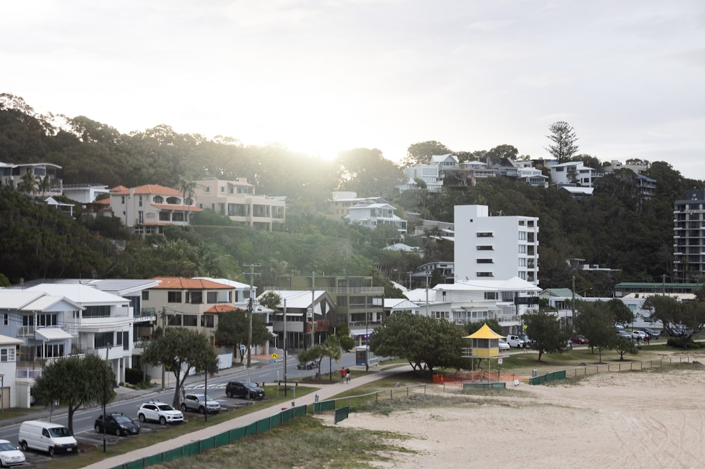

A Gold Coast retaining wall quote should start with the site, not the material. The source guide identifies 8 wall pathways, 15 local area guides, a 5-part approval screen and 1 structured site brief. Core checks include retained height, surcharge above the wall, separation from buildings or other walls, services, easements, fences, pools, subsoil drainage and a lawful point of discharge.
For homeowners comparing retaining wall builders gold coast options, the useful starting point is a clear site brief that explains load, access, drainage, approval triggers and visible wall symptoms.
Retaining Wall Builders Gold Coast Explained
Gold Coast Retaining Wall frames the job as a small civil system where structure, water, access and approval need to agree. That is a useful lens for retaining wall builders Gold Coast homeowners may speak with, because the same wall height can lead to different decisions once driveway load, fill, pool fencing, nearby buildings or drainage outlet options are understood.
A practical brief should name the suburb, approximate length and height, visible symptoms, access limits and what sits above the wall. Photographs should include the whole alignment, the base, the top, the retained slope and where water appears after rain. That gives a contractor enough context to discuss whether the next step is repair, drainage remediation, replacement, engineering or an approval pathway.
Approval Checks Before Assuming Exemption
The published guide warns that Gold Coast's low-wall exemption is conditional. Height alone is not the full test. The five checks it highlights are height and geometry, surcharge, separation, services and easements, plus fences and pools. The 1.5 metre separation condition is especially important when a wall sits near a building or another retaining wall.
- Measure retained height along the full alignment, including steps and nearby terraces.
- Record driveways, buildings, pools, fill, traffic and steep ground above the proposed wall.
- Check whether fences, combined wall-and-fence height or pool-barrier function affect the pathway.
- Locate known services and review title information before settling an alignment.
For a broader plain-English companion on retaining walls on the Gold Coast, compare the same approval questions against the wall type and site interface.
Drainage Is Part Of The Structure
The source guide treats subsoil drainage as a structural decision, not a tidy-up item. A drained wall needs filter fabric behind retained soil, a free-draining aggregate zone, perforated ag pipe at the base and a lawful point of discharge. If the outlet is not known, the first three parts only move water around the site.
Ask the quote to state the aggregate, filter arrangement, pipe, cleanouts and discharge assumption. Surface flow, seepage, irrigation and roofwater should be traced before backfill, because a buried pipe without a workable outlet can become a later investigation problem. Where no suitable connection is obvious, make that investigation a preconstruction task so the wall design and the water path are decided together.
Choosing A Wall Pathway
Material choice should follow the site constraints. The source guide lists concrete sleeper, timber sleeper, besser block, rock and boulder, gabion, drainage, engineered and repair pathways. It also states that footprint, access, loads, finish, expected life and drainage narrow the field.
Concrete sleeper systems are described for replacement walls and stepped residential sites. Timber sleeper systems are described for lower terraces and boundaries. Reinforced, core-filled concrete masonry is presented for structural walls and rendered finishes. Rock, boulder and gabion options depend heavily on whether the site has enough footprint, batter, width and machinery access. Engineered and council-approved pathways become relevant where the exemption does not apply.
Repair Or Replacement Clues
The repair question starts with pattern recognition. Photograph symptoms rather than only the worst spot. Lean or rotation should be shown from the base, top and retained slope. Bulging or opened joints should be located by material and by whether movement sits between posts, through masonry or across the whole length.
Staining, washed fines and visible leaks should be traced back to wet areas, pipe outlets and water movement after rain. The source guide links repair decisions to drainage distress, post rotation, foundation movement and material decay. It also advises avoiding loading or excavating near a visibly unstable wall. A quote that separates symptom, likely cause and proposed response is easier to compare than one that jumps straight to a replacement price.
Who This Applies To
This guide is most relevant to Gold Coast owners planning a new wall, replacing a visibly failing wall or checking whether an existing wall needs drainage work, engineering or approval coordination. It also helps buyers and renovators who need to understand what sits above a boundary, terrace, driveway, pool area or steep part of a block before asking for prices.
It is less useful for choosing purely by appearance. The stronger discussion is about retained height, surcharge load, service location, lawful discharge, machinery access and nearby structures. A clean quote should show how those site facts shaped the wall type, drainage assumptions and approval pathway.
- Map the alignment. Record approximate wall length, retained height, steps, terraces and what sits above the wall.
- Photograph context. Capture the base, top, slope, nearby structures, wet areas and any visible movement after rain.
- Screen approval triggers. Check height, surcharge, separation, services, easements, fences and pool-barrier function before assuming exemption.
- Ask for drainage detail. Request the aggregate, filter fabric, ag pipe, cleanouts and lawful discharge assumption in the written quote.
- Compare by constraint. Assess wall systems against access, load, footprint, finish, expected life, drainage and approval needs.
| Question | Repair pathway | Replacement pathway |
|---|---|---|
| What is visible? | Localised symptoms, drainage clues or material issues that can be assessed. | Widespread lean, rotation, opened joints or movement across the wall length. |
| What must be checked? | Water path, pipe outlets, washed fines and whether drainage remediation is enough. | Height, surcharge, separation, services, access, wall type and approval pathway. |
| What should the quote explain? | Symptom, likely cause and repair scope. | Removal, new system, drainage, discharge assumption and approval coordination. |
Common questions
Does a low retaining wall always avoid approval on the Gold Coast? No. The source guide says the exemption is conditional. Height, surcharge, separation, services, easements, fences and pools can change the pathway, and 1.5 metres is identified as a key separation condition.
What should be photographed before asking for a quote? Photograph the full wall, base, top, retained slope, nearby loads and water marks. For an existing wall, include lean, rotation, bulging, opened joints, staining, soil loss and pipe outlets.
What should a drainage allowance include? The guide describes filter fabric, free-draining aggregate, perforated ag pipe and a lawful point of discharge. A written quote should also name the drainage assumptions, cleanouts and any investigation needed before construction.
Which wall type is best? There is no single best wall type in the source material. Concrete sleeper, timber sleeper, besser block, rock, boulder and gabion pathways depend on footprint, access, loads, finish, expected life, drainage and approval needs.
This guide covers site brief, approval checks, drainage, wall pathways and quote inputs for Gold Coast retaining wall planning.